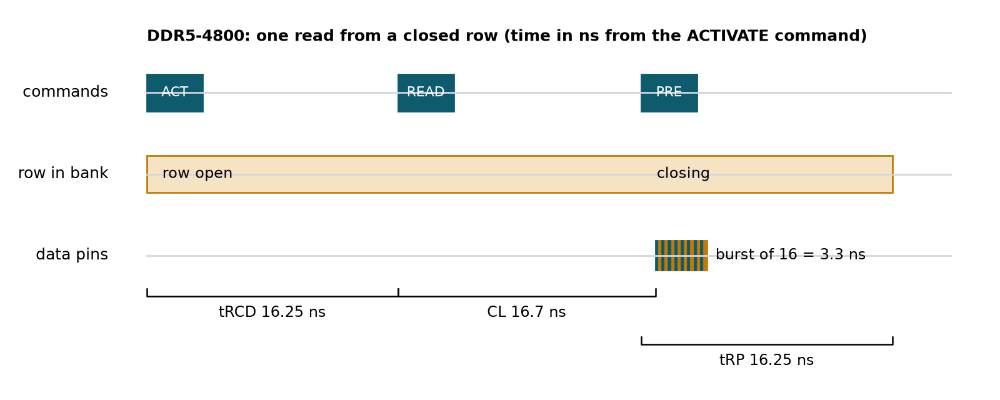
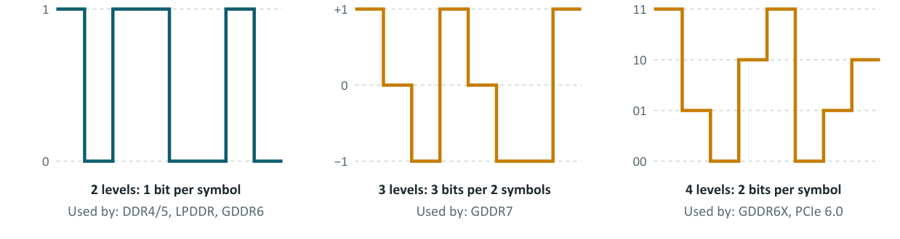

Chapter 3: Reading, Writing and the Interface¶
Chapter 2 described what is inside a DRAM chip. This chapter follows the three steps of an access to it (open a row, read a column, close the row), shows why the interface moves data on both clock edges, works through the bandwidth of different speeds and bus widths, explains the multi-level signalling used by the fastest memories, and finishes with error correction, including a small worked code that you can decode by hand. Together these give the vocabulary needed to read a DDR5 data sheet.
3.1 One read, step by step¶
Reading from DRAM is like using a library: fetch the book, read a line, put the book back. The chip performs three commands.
- ACTIVATE (fetch the book). The chip opens one whole row, 8 Kbit per bank in the 16 Gb chip of Chapter 2, into the sense amplifiers, which read the faint charge on each bitline and amplify it. This takes the row-to-column delay \(t_{RCD}\), about 16 ns in the course's DDR5-4800 example.
- READ (read a line). The controller picks the column. After the CAS latency (40 clock cycles, about 16.7 ns) the data streams out as a burst of 16 transfers.
- PRECHARGE (put the book back). The row is written back into the cells, since reading drained them, and closed, ready for a different row. This takes the precharge time \(t_{RP}\), about 16 ns.
Figure 3.1 draws the timeline for one read to a closed row at DDR5-4800.

The numbers behind the figure come from the clock. DDR5-4800 has a 2400 MHz clock, so one cycle lasts \(1000/2400 = 0.4167\) ns. Then \(t_{RCD} = 39\) cycles \(= 16.25\) ns, \(\text{CL} = 40\) cycles \(= 16.67\) ns, \(t_{RP} = 39\) cycles \(= 16.25\) ns. The burst of 16 transfers at 4800 MT/s lasts \(16 / 4800\ \text{MT/s} = 3.33\) ns.
Example 3.1: Row miss versus row hit
Using the DDR5-4800 numbers above, how long until the first data appears?
- Closed row (miss to an idle bank): ACTIVATE, wait \(t_{RCD}\), READ, wait CL: \(16.25 + 16.67 = 32.9\) ns, which is where the burst starts in Figure 3.1.
- Open row (hit): the row is already in the sense amplifiers, so only READ and CL remain: 16.7 ns.
- Open the wrong row (conflict): the old row must be precharged first, then the new one activated: \(t_{RP} + t_{RCD} + \text{CL} = 16.25 + 16.25 + 16.67 = 49.2\) ns.
That the three cases differ by a factor of three is why memory controllers try to group requests that go to the same row. Bank groups and several banks let the controller open a row in one bank while another bank transfers data, hiding part of the delay.
3.2 Double data rate¶
A clock is a heartbeat that ticks up and down. Older memory moved one piece of data per tick. DDR (double data rate) moves data on the way up and on the way down, doubling the throughput at the same clock. A single-rate waiter carries plates only into the dining room; a DDR waiter also carries dirty plates back on every return trip, so the same number of trips does twice the work.
The first SDRAM (synchronous DRAM) moved data once per clock cycle. A DDR4-3200 module therefore runs a 1600 MHz clock. The DRAM array inside the chip has stayed at only a few hundred MHz across all generations. To feed an ever-faster interface, each generation fetches more bits per data pin from the array at once, the prefetch, and sends them out in a burst. The prefetch has doubled from 2n (DDR) to 4n (DDR2), 8n (DDR3) and 16n (DDR5). DDR4 kept 8n but added bank groups so that commands to different groups can overlap. Chapter 5 follows this history generation by generation.
3.3 Bandwidth at different speeds and widths¶
Bandwidth equals the number of transfers per second times the bus width divided by 8. At 4800 MT/s on a 64-bit bus: \(4800 \times 64 / 8 / 1000 = 38.4\) GB/s. Table 3.1 gives peak bandwidth for a range of DDR5 speeds and three bus widths: 32 bits (one DDR5 sub-channel), 64 bits (one DIMM) and 128 bits (two DIMMs). The last two columns give the clock and the duration of one bit on a data pin.
| Speed (MT/s) | 32-bit (GB/s) | 64-bit (GB/s) | 128-bit (GB/s) | Clock (MHz) | One bit lasts (ns) |
|---|---|---|---|---|---|
| 3200 | 12.8 | 25.6 | 51.2 | 1600 | 0.313 |
| 4800 | 19.2 | 38.4 | 76.8 | 2400 | 0.208 |
| 5600 | 22.4 | 44.8 | 89.6 | 2800 | 0.179 |
| 6400 | 25.6 | 51.2 | 102.4 | 3200 | 0.156 |
| 8000 | 32.0 | 64.0 | 128.0 | 4000 | 0.125 |
| 8800 | 35.2 | 70.4 | 140.8 | 4400 | 0.114 |
Table 3.1: Peak bandwidth of DDR5 speeds.
At 4800 MT/s each bit lasts only about 0.2 ns, and in that time a signal travels about 3 cm along a circuit board. That fact motivates Chapter 12: wires at these speeds stop being simple connections.
3.4 Signalling: NRZ, PAM3 and PAM4¶
Each transfer on a wire is a symbol, sent as a voltage level. Classic NRZ (non-return-to-zero) uses two levels, so each symbol is one bit. To go faster without raising the symbol rate (which makes signals harder to receive cleanly), newer interfaces use more levels. PAM4 (four-level pulse amplitude modulation) carries 2 bits per symbol, and PAM3 carries 3 bits in every 2 symbols, which is 1.5 bits per symbol. More levels mean smaller gaps between the levels, so receivers must be more sensitive and noise matters more. PAM3 balances this trade-off between NRZ and PAM4.

NRZ is used by DDR4 and DDR5, LPDDR and GDDR6. PAM3 is used by GDDR7. PAM4 is used by GDDR6X and by PCIe 6.0.
Example 3.2: Bits per second with multi-level signalling
A GDDR7 pin runs at up to 32 Gbps in first products, counting bits. With PAM3's 1.5 bits per symbol, the symbol rate is \(32 / 1.5 = 21.3\) gigasymbols per second. A PAM4 link carrying the same 32 Gbps would need only \(32/2 = 16\) gigasymbols per second, and NRZ would need 32. The price of fewer symbols is smaller voltage steps: with a fixed total swing, adjacent levels are the whole swing apart in NRZ, half of it apart in PAM3 and one third of it apart in PAM4. PAM3 sits between the two on both counts.
3.5 Error correction: side-band, on-die and inline ECC¶
Cosmic rays, alpha particles, electrical noise and weak cells occasionally flip a bit. Servers cannot afford that, so they store extra check bits computed from the data. When reading, the check bits reveal which bit flipped, and the controller flips it back. This is ECC (error-correcting code). There are three quite different kinds.
- Side-band ECC adds extra chips to the module: 72 bits instead of 64 on DDR4, or \(2 \times 40\) bits instead of \(2 \times 32\) on DDR5. The memory controller computes and checks the code, so it protects the whole path, including the wires on the board, and errors can be logged. This is what "ECC memory" means for servers and workstations.
- On-die ECC (DDR5, LPDDR5 and later) is computed inside each DRAM chip and is invisible to the system. It fixes single-bit errors in the array, which lets vendors keep yields up on dense chips, but it does not protect the bus and does not replace side-band ECC.
- Inline ECC, used in some LPDDR systems, stores check bits in a reserved part of normal memory instead of extra chips, at some cost in capacity and bandwidth.
The 32 GB module of Chapters 11 to 14 stores 8 check bits for every 32 data bits (a 40-bit sub-channel), which is why it has 20 memory chips instead of 16.
A worked code: Hamming(7,4)¶
Real server ECC uses larger codes, but the idea is the same as in the classic Hamming(7,4) code: 4 data bits \(d_1 \dots d_4\) plus 3 check bits \(p_1, p_2, p_3\), placed in seven positions:
position: 1 2 3 4 5 6 7
bit: p1 p2 d1 p3 d2 d3 d4
The check bits are parities (exclusive-ORs): \(p_1 = d_1 \oplus d_2 \oplus d_4\), \(p_2 = d_1 \oplus d_3 \oplus d_4\), \(p_3 = d_2 \oplus d_3 \oplus d_4\). On reading, three syndrome bits are recomputed over the stored word: \(s_1 = c_1 \oplus c_3 \oplus c_5 \oplus c_7\), \(s_2 = c_2 \oplus c_3 \oplus c_6 \oplus c_7\), \(s_3 = c_4 \oplus c_5 \oplus c_6 \oplus c_7\). The number \(s_1 + 2 s_2 + 4 s_3\) is the position of the flipped bit, or 0 if there is no error.
Example 3.3: Break a bit, watch it get fixed
Store the data \(d_1 d_2 d_3 d_4 = 1\,0\,1\,1\).
- Check bits: \(p_1 = 1 \oplus 0 \oplus 1 = 0\), \(p_2 = 1 \oplus 1 \oplus 1 = 1\), \(p_3 = 0 \oplus 1 \oplus 1 = 0\).
- The stored codeword (positions 1 to 7) is
0 1 1 0 0 1 1. - A cosmic ray flips position 6, so the memory returns
0 1 1 0 0 0 1. - Syndrome: \(s_1 = 0 \oplus 1 \oplus 0 \oplus 1 = 0\); \(s_2 = 1 \oplus 1 \oplus 0 \oplus 1 = 1\); \(s_3 = 0 \oplus 0 \oplus 0 \oplus 1 = 1\).
- \(s_1 + 2 s_2 + 4 s_3 = 0 + 2 + 4 = 6\): position 6 is wrong. Flip it back and read the data bits from positions 3, 5, 6, 7:
1 0 1 1, the original.
A single-error code
Hamming(7,4) corrects one flipped bit. With two flipped bits it points at the wrong position and silently produces wrong data. Server ECC adds bits so that it can at least detect two errors.
3.6 Summary¶
- A read is three commands: ACTIVATE (open a row into the sense amplifiers), READ (select a column; data appears after CAS latency as a burst) and PRECHARGE (write the row back and close it).
- For DDR5-4800, \(t_{RCD}\) is 16.25 ns, CL is 16.7 ns, \(t_{RP}\) is 16.25 ns and a burst of 16 lasts 3.3 ns. Hits to an open row are three times quicker than conflicts.
- DDR moves data on both clock edges; prefetch lets a slow array feed a fast interface.
- NRZ carries 1 bit per symbol, PAM3 1.5 and PAM4 2.
- Side-band ECC protects the whole path; on-die ECC protects only the array; inline ECC borrows ordinary memory. Hamming codes locate a flipped bit by a syndrome.
3.7 Exercises¶
Exercise 3.1. For DDR5-6400 (3200 MHz clock) with \(t_{RCD} = 46\) cycles, CL = 46 cycles and \(t_{RP} = 46\) cycles, find the clock period and the times for a row hit, a row miss on an idle bank and a row conflict.
Answer
The clock period is \(1000/3200 = 0.3125\) ns, so each of the three parameters is \(46 \times 0.3125 = 14.375\) ns. Row hit: 14.4 ns. Miss on an idle bank: \(14.375 + 14.375 = 28.75\) ns. Conflict: \(3 \times 14.375 = 43.1\) ns.
Exercise 3.2. One DDR5 sub-channel has 32 data pins and a burst length of 16. How many bytes does one burst carry, and how long does the burst last at 4800 MT/s?
Answer
\(16 \times 32 / 8 = 64\) bytes, one cache line. At 4800 MT/s the 16 transfers last \(16/4800\,\text{MT/s} = 3.33\) ns.
Exercise 3.3. Encode the data 0 1 1 0 in Hamming(7,4), flip position 3 of the codeword and decode it.
Answer
\(d_1 d_2 d_3 d_4 = 0\,1\,1\,0\). \(p_1 = 0 \oplus 1 \oplus 0 = 1\), \(p_2 = 0 \oplus 1 \oplus 0 = 1\), \(p_3 = 1 \oplus 1 \oplus 0 = 0\). Codeword (positions 1 to 7): \(p_1 p_2 d_1 p_3 d_2 d_3 d_4 = 1\,1\,0\,0\,1\,1\,0\). Flipping position 3 gives 1 1 1 0 1 1 0. Syndrome: \(s_1 = c_1 \oplus c_3 \oplus c_5 \oplus c_7 = 1 \oplus 1 \oplus 1 \oplus 0 = 1\); \(s_2 = c_2 \oplus c_3 \oplus c_6 \oplus c_7 = 1 \oplus 1 \oplus 1 \oplus 0 = 1\); \(s_3 = c_4 \oplus c_5 \oplus c_6 \oplus c_7 = 0 \oplus 1 \oplus 1 \oplus 0 = 0\). The syndrome is \(1 + 2 + 0 = 3\), so position 3 is flipped back, and the data bits at positions 3, 5, 6, 7 are 0 1 1 0.
Exercise 3.4. A memory interface must carry 24 Gbps per pin. How many symbols per second per pin does it need with NRZ, PAM3 and PAM4?
Answer
NRZ (1 bit per symbol): 24 Gsymbols/s. PAM3 (1.5 bits per symbol): \(24/1.5 = 16\) Gsymbols/s. PAM4 (2 bits per symbol): 12 Gsymbols/s. The fewer symbols per second, the easier the timing, but the smaller the voltage gaps between levels.
Exercise 3.5 (Assignment 12: a tiny memory controller). Write a Verilog state machine that issues ACTIVATE, then READ, then PRECHARGE with counters for \(t_{RCD}\), CL and \(t_{RP}\) in clock cycles. Write a cocotb behavioural DRAM model that raises an error if any timing is violated. Run reads to random rows and columns, then deliberately shorten \(t_{RCD}\) by one cycle.
Answer
At DDR5-4800 the clock is 2400 MHz, so \(t_{RCD}\) of 16.25 ns is 39 cycles. A simple controller (precharge timing simplified, since a real DRAM also enforces a minimum row-open time and write recovery) is:
module memctl #(parameter TRCD = 39, CL = 40, TRP = 39) (
input wire clk, rst, req,
output reg act, rd, pre, data_valid, busy
);
localparam IDLE = 0, RCD = 1, CAS = 2, RP = 3;
reg [1:0] state;
reg [7:0] cnt;
always @(posedge clk) begin
act <= 0; rd <= 0; pre <= 0; data_valid <= 0;
if (rst) begin state <= IDLE; busy <= 0; cnt <= 0; end
else case (state)
IDLE: if (req) begin
act <= 1; busy <= 1; cnt <= TRCD - 1; state <= RCD;
end
RCD: if (cnt == 0) begin rd <= 1; cnt <= CL - 1; state <= CAS; end
else cnt <= cnt - 1;
CAS: if (cnt == 0) begin
data_valid <= 1; pre <= 1; cnt <= TRP - 1; state <= RP;
end else cnt <= cnt - 1;
RP: if (cnt == 0) begin busy <= 0; state <= IDLE; end
else cnt <= cnt - 1;
endcase
end
endmodule
The cocotb model records the cycle of each command and asserts that READ comes at least \(t_{RCD}\) cycles after ACTIVATE and the next ACTIVATE at least \(t_{RP}\) after PRECHARGE. Expected result: all reads pass with the correct timings, and the version with \(t_{RCD}\) shortened by one cycle must make the model report a violation.